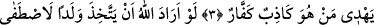

DÎNİ
ALLAH’A HAS KILARAK
KULLUK ETMEK
Bismillâhirrahmânirrahîm
1. Bu Kitap izzet ve hikmet sâhibi Allah katından indirilmiştir.
2. (Rasûlüm!) Şüphesiz ki Kitab’ı sana hak olarak indirdik. O halde sen de dini
Allah’a has kılarak (ihlâs ile) kulluk et.
3. Dikkat et, hâlis din yalnız Allah’ındır. O’nu bırakıp kendilerine bir takım
dostlar edinenler: Onlara, bizi sadece Allah’a yaklaştırsınlar diye kulluk ediyoruz,
derler. Doğrusu Allah, ayrılığa düştükleri şeylerde aralarında hüküm verecektir.
Şüphesiz Allah, yalancı ve inkârcı kimseyi doğru yola iletmez.
4. Eğer Allah bir evlât edinmek isteseydi, elbette yarattıklarından dilediğini
seçerdi. O yücedir. O, tek ve kahhâr olan Allah’tır.
5. Allah, gökleri ve yeri hak ile yarattı. Geceyi gündüzün üzerine örtüyor,
gündüzü de gecenin üzerine sarıyor. Güneşi ve ayı emri altına almıştır. Her biri
belli bir süreye kadar akıp gider. Dikkat et! O azîzdir ve çok bağışlayandır.
Rahmân ve Rahîm Allah’ın adıyla
“Bu Kitap” yâni Kur’an, özellikle bu sûre-i şerîfe “izzet ve hikmet sâhibi Allah